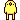

| 2012/02 23 Thu | 二日目ヽ( ・∀・)ノ |
デビューして二日が経ちました。
今日は埼玉の羽生市のイオンモールにお邪魔させて頂きました！(´∀｀)
沢山の乃木坂ファミリーのみなさんに会えて嬉しかったです!!
お久しぶりの方
そして今日私達を知ってくださった方、本当にありがとうございました!!
握手できて嬉しかったです(o⌒∇⌒o)
まだまだ不馴れなところもありますがみなさんと笑顔でお話しできてよかったです!!ヽ(・∀・)ノ
明後日は静岡の方にお邪魔します!!
よろしくお願いいたします!!
ここで
改めて自己紹介をしたいと思います!!
デビューしてまた沢山の方が乃木坂を知ったと思います。
そしてこれからもっと知ってもらえるように、まず私の事を知ってほしいので、この場を借りて、書きたいと思います

秋田県出身の高校一年生
１６歳の
いこまちゃん、いこまっちこと生駒里奈です！
よく黙ってればいいけど
しゃべると残念と言われます。(´・д・｀)
あと動きが変...
直そうと思ったのですが、小さい頃のビデオを見たら約２歳の頃からしゃべり方と動きが同じだということが判明したため、これは無理だと理解しました

好きな食べ物はキュウリの浅漬です！
だって美味しいんです!!
こんな私ですが一生懸命頑張ります!!
きっといいところもあると思います

どうか一度見てみて下さいな!!
よろしくお願いします!!
じゃあ！
へばなっ!!
コメント(330)
2012/02/23 22:00